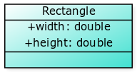
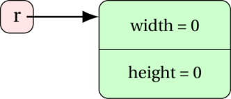

Classes - Writing your own types
Assumed Knowledge:
Learning Outcomes:
- Be able to create and use a custom type via classes.
- Be able to identify, add, and access instance variables of values of custom types.
- Understand how an object is built from a class template.
Author: Gaurav Gupta
We have seen quite a few different types that data can be:
intfor simple numbersbooleanfor true/falsefloatfor more precise numbersStringfor textPVectorfor two or three numbers bundled up- arrays for many values bundled up
We have also seen that these are split into primitive/value types (int, boolean, float, etc) and compound/reference types (String, PVector, arrays).
But what if we want to make our own types?
To warm-up, lets see a situation where a custom type might help.
There are 11 players in my soccer team and we want to track the number of shots taken by each player during the season, number of goals scored, and the number of red cards they get. So, for each player I need to store a String for their name, and three ints for their shots, goals, and red cards. With what I have now, I might consider the following variables.
String[] names;
int[] shots;
int[] goals;
int[] redCards;
If you have done something like this before, you know it can be hard to keep everything in order. Player 0 has values in three different arrays, all at slot 0 (hopefully). It would be easier if there was a Player type that could store one String and three ints, then we could define
Player[] players
You might have experienced this benefit when using PVectors back in your Processing days.
Classes are Custom Types
In Java, you can create this custom type with a class.
public class Player {
public String name;
public int goals;
public int shots;
public int redCards;
}
You should be thinking at this point “but how do I make values of this type?”. I make an int with a number (1), I make a String with inverted commas, I make a PVector with PVector(1,2). This last example is your clue!
All custom types are reference types and follow the same rules as other reference types:
- You need an allocation step with
new - You use the name of the type to create values, passing in necessary parameters.
In the case of our custom type, the “necessary parameters” are the String and three ints
Jargon: Instance Variables
The variables we declare in our custom type are called “instance variables”. They are still variables, and they act just like the primitive variables we know and love, but to distinguish them (because they can do some special things), we give them a special name.
This means we say “you construct a value of a custom type by giving the name of the type and each of the instance variables”.
Player player;
player = new Player("Gaurav", 1, 26, 0);
Why public?
Classes can also act to “encapsulate” things, which is dealt with later. So you have to be explicit in saying that the instance variables of a class are available to everyone else by declaring them public. We won’t concern ourselves with the alternatives yet.
Jargon: Object
We have avoided the term so far, but now it is time to embrace it. Any value created in a reference type is called an “object”. So player and name are both objects. We say player is an object of type Player and name is an object of type String. All objects are values (which was the name we used for them until now). Just as instance variables are like variables with extras, objects are values with extras - we will see the extras soon.
Defining class and creating objects
Defining classes
-
Each class is defined in a separate file with the same name and ending with
.java -
All Java class definitions are separate files in the same folder (for now).
Adding instance variables
Instance variables can be declared as in the following two examples.
Note the public modifier (for now):
public int instanceVar1;
public String instanceVar2;
Example - Defining a class
public class Rectangle {
public double width;
public double height;
}
Note that the above class definition merely provides a template or blueprint for the class. No complete program using this class has yet been written, and no object (instance) of this class has yet been created.

Define a class for a Circle that is represented by its radius.
solution
public class Circle {
public double radius;
/*
* note that int is a wrong choice as radius
* CAN be a floating-point value like 1.5 or 2.4
*/
}
Declaration and instantiation
Declaration
Declaration creates a reference in the memory, which doesn’t refer to any storage space yet.
An object of the new class type is declared in main as follows:
ClassName classVar; //declaration
In the following example, r is an object of class Rectangle1.
Rectangle r; //example
Instantiation
We create an instance that holds the instance variables and the object holds its address. We say that the object refers to the instance, and represent it by an arrow going from the object to the instance.
classVar = new ClassName(); //instantiation
In the following example, new Rectangle() creates an instance (the green block in the diagram following the code) and the object r refers to it.
r = new Rectangle(); //example

Combining declaration and instantiation
ClassName classVar = new ClassName();
//declaration + instantiation
Rectangle r = new Rectangle(); //example
Declare and instantiate an object myCircle of class Circle.
solution
public class Client {
public static void main(String[] args) {
Circle myCircle = new Circle();
}
}
Although, you can just write the relevant part in written exams:
Circle myCircle = new Circle();
The dot (.) operator
The dot operator gives us access to the members (instance variables and
methods) for an object. Think of it as the apostrophe s (’s) of the
human language (as in “Gaurav’s class” or “Matt’s workshop”)
Rectangle r = new Rectangle(); //example
r.width = 5;
- The expression
rgives us access to the instance variablewidthof objectr.
Write a piece of code that sits outside the class definition and displays the radius of the object myCircle
solution
System.out.println(radius);
Are there any default values?
-
Each instance variable is automatically initialised to the default value for its type when an object of the class is created.
-
For example, an instance variable of type
intis given the default value 0; -
And an instance variable of type
String(or any class type) is given the default valuenull. (More aboutnulllater.)
I wish creating objects was easier (aka constructors)
Let’s say that the user wants to create a Rectangle whose width is 5
and height is 8. The following code achieves this,
Rectangle r = new Rectangle();
r.width = 5;
r.height = 8;
However, it would be really nice if one could pass the values for the instance variables in the instantiation statement itself, as,
Rectangle r = new Rectangle(5, 8);
This is done through constructors.
Constructors
-
A constructor is a special function defined in the class.
-
A constructor must have the same name as the class.
-
A constructor has no return type (not even void).
-
There may be multiple constructors, each distinguished by its parameter list. Thus, we may have one constructor with no parameters, and another with one
intparameter. -
A suitable constructor is automatically called during instantiation based on number of parameters passed. If an appropriate constructor is not found, a compilation error is generated.
Example - Constructors
public class Rectangle {
public double width, height;
public Rectangle() { //default constructor
width = 1;
height = 1;
}
//parameterized constructor for a square
public Rectangle(double side) {
width = side;
height = side;
}
//parameterized constructor - generic
public Rectangle(double w, double h) {
width = w;
height = h;
}
}
Constructors should initialise all the instance variables
This is your one chance to get some sensible values into those instance variables. After this, the object is created and other code might try to use the values in the instance variables, so put something in every one.
Default constructor
It should be noted that a default constructor (without any parameters) is pre-defined for you by Java and that’s why you can instantiate objects without defining it yourself.
Rectangle r = new Rectangle();
The default constructor assigns the default values for the appropriate data types to the instance variables. However, once you define a parameterized constructor, the built-in default constructor is taken away by Java. Thus, if you want to construct an object with default initial values for the instance variables, you need to re-define that!
Defining the default constructor
Let’s say the default Rectangle instance should be of unit length. We
can define the default constructor as,
public Rectangle() {
length = 1;
breadth = 1;
}
Add a default constructor to the class Circle that assigns the value 1.0 to instance variable radius.
solution
//default constructor
public Circle() {
radius = 1;
}
Add a parameterized constructor to the class Circle that assigns the value of the parameter passed to instance variable radius.
solution
//parameterized constructor
public Circle(double r) {
radius = r;
}